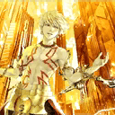
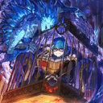
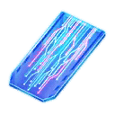
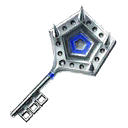

本頁面資訊僅供參考，實際情況請以遊戲內資料為準。
由於直接使用官方翻譯，可能會與其他站內翻譯相異，敬請見諒。
其他公告內容請參照日版當時公告翻譯。

| 活動限定效果 | ||
|---|---|---|
 | 櫻Ｂ力量 EX |
櫻硬幣的掉落獲得數增加2個【『Fate/EXTRA CCC特別活動』活動期間限定】 |
| 櫻Ｂ力量 A |
櫻硬幣的掉落獲得數增加1個【『Fate/EXTRA CCC特別活動』活動期間限定】 |
 |  | 吞噬者系敵人的追加出現率提升20%(最大解放:50%)【『Fate/EXTRA CCC特別活動』活動期間限定】 |
| 變形者系敵人的追加出現率提升20%(最大解放:50%)【『Fate/EXTRA CCC活動期間限定】 | |
|  | TYPEI系敵人的追加出現率提升20%(最大解放:50%)【『Fate/EXTRA CCC特別活動』活動期間限定】 |
|
| 櫻色系敵人的追加出現率提升20%(最大解放:50%)【『Fate/EXTRA CCC特別活動』活動期間限定】 |
|
| 櫻硬幣的掉落獲得數增加1個(最大解放:2個)【『Fate/EXTRA CCC特別活動』活動期間限定】 |
採用GoogleDrive資料夾呈現

| 任務 | 獎勵 | 解鎖條件 |
|---|---|---|
| No.1 通關『第一幕 天鵝湖歸來(1/6)』 | 100 | 2/20 17:00後 |
| No.2 通關『第一幕 天鵝湖歸來』 | 100 100 | 達成：No.1 |
| No.3 通關『第二幕 滑落的柯碧莉亞』 | 200 | 通過：第二幕 滑落的柯碧莉亞(1/5) |
| No.4 通關『第三幕 再一次胡桃鉗』 | 400 | 通過：第三幕 再一次胡桃鉗(1/3) |
| No.5 通關『第四幕 沉沒美人(2/4)』 | 2 600 | 通過：第四幕 沉沒美人(1/4) |
| No.6 通關『第四幕 沉沒美人(4/4)』 | 600 | 通過：第四幕 沉沒美人(2/4) |
| No.7 擊敗『BeastⅢ／R』 | 通過：—閉幕— | |
| No.8 擊敗30個『TYPEⅠ』系的敵人 | 500 100 | 通過：第一幕 天鵝湖歸來(5/6) |
| No.9 擊敗60個『TYPEⅠ』系的敵人 | 5 200 開放關卡：WANTED Archer T | 達成：No.8 |
| No.10 擊敗90個『TYPEⅠ』系的敵人 | 400 | 達成：No.9 |
| No.11 擊敗120個『TYPEⅠ』系的敵人 | 800 600 開放關卡：WANTED Caster M | 通過：第四幕 沉沒美人(3/4) |
| No.12 擊敗30個『TYPEⅡ』系的敵人 | 5 200 | 通過：第二幕 滑落的柯碧莉亞(4/5) |
| No.13 擊敗60個『TYPEⅡ』系的敵人 | 5 400 | 達成：No.12 |
| No.14 擊敗90個『TYPEⅡ』系的敵人 | 600 開放關卡：WANTED Berserker HXA | 通過：第四幕 沉沒美人(2/4) |
| No.15 擊敗30個『TYPEⅢ』系的敵人 | 500 200 | 通過：第三幕 再一次胡桃鉗(2/3) |
| No.16 擊敗60個『TYPEⅢ』系的敵人 | 700 400 | 通過：第四幕 沉沒美人(2/4) |
| No.17 擊敗90個『TYPEⅢ』系的敵人 | 5 600 開放關卡：WANTED Assassin K | 達成：No.16 |
| No.18 擊敗30個『櫻』系的敵人 | 5 100 | 達成：No.1 |
| No.19 擊敗90個『櫻』系的敵人 | 5 200 開放關卡：WANTED Saber S | 達成：No.18 |
| No.20 擊敗150個『櫻』系的敵人 | 400 400 | 通過：第三幕 再一次胡桃鉗(3/3) |
| No.21 擊敗240個『櫻』系的敵人 | 5 600 開放關卡：WANTED Rider M | 達成：No.20 |
| No.22 擊敗30個『吞噬者』系的敵人 | 5 100 開放關卡：WANTED Lancer C | 通過：第一幕 天鵝湖歸來(6/6) |
| No.23 擊敗60個『吞噬者』系的敵人 | 5 200 | 達成：No.22 |
| No.24 擊敗90個『吞噬者』系的敵人 | 5 400 | 達成：No.23 |
| No.25 擊敗180個『吞噬者』系的敵人 | 5 600 | 達成：No.24 |
| No.26 擊敗20個『吞噬者TYPE X』 | 5 1k 開放關卡：WANTED Lancer K | 達成：No.98 |
| No.27 擊敗20個『變形者』系的敵人 | 5 100 | 達成：No.1 |
| No.28 擊敗40個『變形者』系的敵人 | 5 200 開放關卡：WANTED Rider G | 達成：No.27 |
| No.29 擊敗80個『變形者』系的敵人 | 400 400 | 通過：第三幕 再一次胡桃鉗(1/3) |
| No.30 擊敗160個『變形者』系的敵人 | 5 600 開放關卡：WANTED Archer A&M | 達成：No.29 |
| No.31 擊敗30個『櫻蠕蟲』 | 500 200 | 通過：第二幕 滑落的柯碧莉亞(1/5) |
| No.32 擊敗60個『櫻蠕蟲』 | 5 400 開放關卡：WANTED Caster G | 達成：No.31 |
| No.33 擊敗30個『櫻機械』 | 5 200 開放關卡：FREE BATTLE 起落之腿 | 通過：第二幕 滑落的柯碧莉亞(5/5) |
| No.34 擊敗60個『櫻機械』 | 5 400 開放關卡：WANTED Saber A | 達成：No.33 |
| No.35 擊敗30個『櫻之手』 | 5 200 開放關卡：FREE BATTLE 鏈接腳踝 | 通過：FREE BATTLE 起落之腿 |
| No.36 擊敗60個『櫻之手』 | 5 400 開放關卡：WANTED Assassin J&H | 達成：No.35 |
| No.37 擊敗10位持有『秩序』屬性的從者 | 300 200 | 通過：第一幕 天鵝湖歸來(6/6) |
| No.38 擊敗20位持有『秩序』屬性的從者 | 400 | 達成：No.37 |
| No.39 擊敗30位持有『秩序』屬性的從者 | 5 600 | 達成：No.38 |
| No.40 擊敗10位持有『中立』屬性的從者 | 400 200 | 通過：第二幕 滑落的柯碧莉亞(2/5) |
| No.41 擊敗20位持有『中立』屬性的從者 | 5 400 | 達成：No.40 |
| No.42 擊敗30位持有『中立』屬性的從者 | 5 600 | 達成：No.41 |
| No.43 擊敗10位持有『混沌』屬性的從者 | 5 200 | 達成：No.1 |
| No.44 擊敗20位持有『混沌』屬性的從者 | 5 400 | 達成：No.43 |
| No.45 擊敗30位持有『混沌』屬性的從者 | 500 600 | 通過：第四幕 沉沒美人(1/4) |
| No.46 擊敗10位『王』的從者 | 5 200 | 通過：第一幕 天鵝湖歸來(2/6) |
| No.47 擊敗10位『騎士』的從者 | 5 200 | 通過：第一幕 天鵝湖歸來(4/6) |
| No.48 擊敗10位『在神話中登場』的從者 | 500 400 | 通過：第三幕 再一次胡桃鉗(1/3) |
| No.49 擊敗10位『筋力A以上』的從者 | 800 600 | 通過：第四幕 沉沒美人(2/4) |
| No.50 擊敗10位『銀髮或白髮』的從者 | 5 400 開放關卡：WANTED Berserker V | 通過：第二幕 滑落的柯碧莉亞(5/5) |
| No.51 擊敗10位『東洋』的從者 | 500 600 | 通過：第四幕 沉沒美人(1/4) |
| No.52 擊敗4位『WANTED從者』 | 4m 1k | 通過：第一幕 天鵝湖歸來(5/6) |
| No.53 擊敗8位『WANTED從者』 | 5m 1k | 達成：No.52 |
| No.54 擊敗11位『WANTED從者』 | 6m 2k | 達成：No.53 |
| No.55 擊敗全部『WANTED從者』 | 3k | 達成：No.54 |
| No.56 累計通關10次位於『頭』的關卡 | 300 100 | 通過：第一幕 天鵝湖歸來(3/6) |
| No.57 累計通關10次位於『手與手臂』的關卡 | 500 100 | 通過：第二幕 滑落的柯碧莉亞(3/5) |
| No.58 累計通關10次位於『軀體』的關卡 | 200 | 通過：第二幕 滑落的柯碧莉亞(5/5) |
| No.59 累計通關10次位於『腿腳』的關卡 | 5 100 | 通過：第一幕 天鵝湖歸來(6/6) |
| No.60 累計通關10次位於『背面的頭』的關卡 | 5 400 | 通過：第三幕 再一次胡桃鉗(2/3) |
| No.61 累計通關10次位於『背面的手與手臂』的關卡 | 600 600 | 通過：第四幕 沉沒美人(2/4) |
| No.62 累計通關10次位於『背面的軀體』的關卡 | 5 400 | 通過：第三幕 再一次胡桃鉗(2/3) |
| No.63 累計通關10次位於『背面的腿腳』的關卡 | 100 400 | 通過：第三幕 再一次胡桃鉗(3/3) |
| No.64 通關5種位於『頭』的關卡 | 100 100 | 通過：第一幕 天鵝湖歸來(3/6) |
| No.65 通關10種位於『手腳』的關卡 | 5 100 | 通過：第二幕 滑落的柯碧莉亞(3/5) |
| No.66 通關5種位於『軀體』的關卡 | 5 400 | 通過：第三幕 再一次胡桃鉗(1/3) |
| No.67 通關5種位於『背面的頭』的關卡 | 5 600 | 通過：第四幕 沉沒美人(1/4) |
| No.68 通關5種位於『背面的手腳』的關卡 | 600 | 通過：第四幕 沉沒美人(3/4) |
| No.69 通關5種位於『背面的軀體』的關卡 | 5 600 | 通過：第四幕 沉沒美人(2/4) |
| No.70 通關10種位於『上半身』的關卡 | 5 200 | 通過：第二幕 滑落的柯碧莉亞(3/5) |
| No.71 通關10種位於『下半身』的關卡 | 100 400 | 通過：第三幕 再一次胡桃鉗(1/3) |
| No.72 通關10種位於『右半身（除去中央）』的關卡 | 5 600 | 通過：第四幕 沉沒美人(2/4) |
| No.73 通關10種位於『左半身（除去中央）』的關卡 | 5 200 | 通過：第二幕 滑落的柯碧莉亞(5/5) |
| No.74 通關5種位於『BB上半身』的關卡 | 3 | 通過：Bottom Black Encore! |
| No.75 通關5種位於『BB下半身』的關卡 | 通過：Bottom Black Encore! | |
| No.76 通關位於『表面』的全部關卡 | 通過：終幕 撕裂時間的帕拉迪昂(2/2) | |
| No.77 通關位於『背面』的全部關卡 | 通過：—閉幕— | |
| No.78 通關『BB地圖』上的全部關卡 | 3 | 達成：No.84 |
| No.79 通關全部關卡 | 達成：No.84 | |
| No.80 通關『NAMELESS BATTLE』 | 通過：Bottom Black Encore! | |
| No.81 通關『MICOOON BATTLE』 | 通過：Bottom Black Encore! | |
| No.82 通關『TYRANT BATTLE』 | 通過：Bottom Black Encore! | |
| No.83 擊敗『BB／GO』 | 達成：No.84 | |
| No.84 擊敗3名衛士 | 通過：Bottom Black Encore! | |
| No.85 累計獲得戰利品『櫻硬幣』200個 | 5 100 | 達成：No.1 |
| No.86 累計獲得戰利品『櫻硬幣』400個 | 5 200 | 達成：No.85 |
| No.87 累計獲得戰利品『櫻硬幣』800個 | 2 200 | 達成：No.86 |
| No.88 累計獲得戰利品『櫻硬幣』1600個 | 5 200 | 達成：No.87 |
| No.89 『BB』達到靈基再臨第1階段 | 5 | 通過：Bottom Black Encore! |
| No.90 『BB』達到靈基再臨第3階段 | 5 | 達成：No.89 |
| No.91 『BB』的羈絆等級達到1 | 5 | 通過：Bottom Black Encore! |
| No.92 『BB』的羈絆等級達到3 | 100 | 達成：No.91 |
| No.93 完成10個任務 | 100 | 達成：No.1 |
| No.94 完成20個任務 | 5 200 | 達成：No.93 |
| No.95 完成30個任務 | 5 400 | 達成：No.94 |
| No.96 完成40個任務 | 5 400 | 達成：No.95 |
| No.97 完成50個任務 | 100 600 | 達成：No.96 |
| No.98 完成60個任務 | 600 開放關卡：FREE BATTLE 踩踏之掌 | 通過：第三幕 再一次胡桃鉗(3/3) 通過：FREE BATTLE 站所之腿 |
| No.99 完成90個任務 | 開放關卡：FREE BATTLE 最後一步 | 達成：No.84 |
| No.100 完成所有任務 | 開放關卡：Raining Encounter | 達成：No.99 |
| KP | |||
|---|---|---|---|
| 交換物 | 需求數 | 限制 | 共需 |
| 15,000 | 1 | 15,000 | |
| 500 | 1 | 500 | |
| 500 | 1 | 500 | |
| 500 | 1 | 500 | |
| 500 | 1 | 500 | |
| 1,000 | 1 | 1,000 | |
| 2,000 | 1 | 2,000 | |
| 1,000 | 1 | 1,000 | |
| 1,000 | 1 | 1,000 | |
| 1,000 | 1 | 1,000 | |
| 500 | 1 | 500 | |
| 1,000 | 1 | 1,000 | |
| 2,000 | 1 | 2,000 | |
| 500 | 1 | 500 | |
| 2,000 | 1 | 2,000 | |
| 2,000 | 1 | 2,000 | |
| 500 | 1 | 500 | |
| 500 | 1 | 500 | |
| 500 | 1 | 500 | |
| 500 | 1 | 500 | |
| 500 | 1 | 500 | |
| 1,000 | 1 | 1,000 | |
| 100,000 | 0 | 0 | |
| 合計 | 34,500 | ||
| 櫻硬幣 | |||
|---|---|---|---|
| 交換物 | 需求數 | 限制 | 共需 |
| 10 | 1 | 10 | |
| 300 | 5 | 1,500 | |
| 10 | 100 | 1,000 | |
| 5 | 100 | 500 | |
| 60 | 20 | 1,200 | |
| 60 | 20 | 1,200 | |
| 120 | 10 | 1,200 | |
| 120 | 10 | 1,200 | |
| 90 | 20 | 1,800 | |
| 90 | 20 | 1,800 | |
| 80 | 20 | 1,600 | |
| 60 | 20 | 1,200 | |
| 60 | 20 | 1,200 | |
| 60 | 20 | 1,200 | |
| 40 | 30 | 1,200 | |
| 40 | 30 | 1,200 | |
| 40 | 30 | 1,200 | |
| 5,000 | 1 | 5,000 | |
| 60 | 20 | 1,200 | |
| 60 | 20 | 1,200 | |
| 60 | 20 | 1,200 | |
| 40 | 20 | 800 | |
| 40 | 20 | 800 | |
| 40 | 20 | 800 | |
| 5 | 500 | 2,500 | |
| 4 | 0 | 0 | |
| 300 | 2 | 600 | |
| 300 | 2 | 600 | |
| 150 | 1 | 150 | |
| 150 | 1 | 150 | |
| 150 | 1 | 150 | |
| 150 | 1 | 150 | |
| 合計 | 35,510 | ||
| 櫻紙幣 | |||
|---|---|---|---|
| 交換物 | 需求數 | 限制 | 共需 |
|  | 300 | 1 | 300 |
| 200 | 1 | 200 | |
| 400 | 1 | 400 | |
| 300 | 1 | 300 | |
| 300 | 1 | 300 | |
| 500 | 1 | 500 | |
| 400 | 1 | 400 | |
| 300 | 1 | 300 | |
| 500 | 1 | 500 | |
| 600 | 1 | 600 | |
| 800 | 1 | 800 | |
| 600 | 1 | 600 | |
| 500 | 1 | 500 | |
| 700 | 1 | 700 | |
| 800 | 1 | 800 | |
|  | 1,000 | 1 | 1,000 |
| 合計 | 8,200 | ||